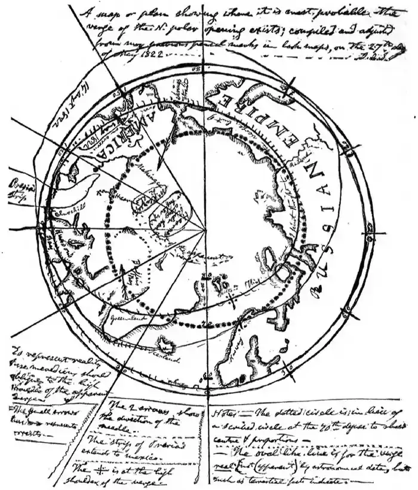
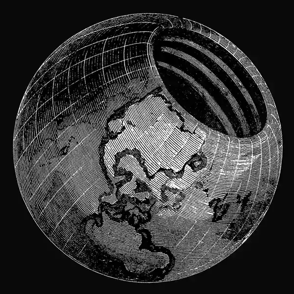

Hollow Earth is the most generative theory in this archive. It has a genuine scientific origin, a documented political near-miss, a real utopian colony, and a fictional literature that has been mistaken for testimony for eighty years. Almost every other hidden-world claim borrows a piece of it.
Maps, diagrams and images





The scientific origin: Edmond Halley, 1692
The theory begins with a problem in navigation. Compasses did not point consistently north; the deviation varied by location and over time. Halley — the comet Halley — collected magnetic readings across the Atlantic and concluded that the poles themselves were drifting.
His explanation, read to the Royal Society in a series of papers from 1681 and published in 1692, was that the Earth is a hollow shell containing inner spheres, each rotating at a different rate, with a luminous atmosphere between them. The multiple rotating layers would produce the observed drift. He did not propose openings at the poles; that was added a century later.
The Library of Congress’s research guide on hollow-Earth literature and Discover magazine’s three-century history both trace the line from Halley forward. What is notable is that Halley’s motive was data: a wobbling compass needed an explanation, and a nested rotating Earth was, at the time, a candidate.
Symmes and the holes
On 10 April 1818, a War of 1812 veteran and trader named John Cleves Symmes Jr. circulated a broadsheet now known as Circular No. 1:
“I declare that the earth is hollow and habitable within; containing a number of solid concentric spheres, one within the other, and that it is open at the poles twelve or sixteen degrees. I pledge my life in support of this truth, and am ready to explore the hollow, if the world will support and aid me in my undertaking.” John Cleves Symmes Jr., 1818 — quoted by HISTORY
His elaboration is where the imagery comes from. The openings are thousands of miles across and curve so gently that a ship could sail in without noticing. Inside is “a warm and rich land, stocked with thrifty vegetables and animals if not men.” The auroras are reflections of the inner light. Arctic animals that vanish in winter have gone inside to escape the cold.
Symmes spent a decade lobbying for an expedition. He never got one, but his chief publicist, Jeremiah Reynolds, did — Congress funded the United States Exploring Expedition of 1838–1842, the first American scientific voyage to the Antarctic, though by then the hollow-Earth rationale had been dropped. Academic histories treat Symmes as an accidental founder of American polar exploration.
He also founded a genre. Symzonia: A Voyage of Discovery (1820) was the first hollow-Earth novel; Poe’s Narrative of Arthur Gordon Pym and Verne’s Journey to the Centre of the Earth followed.
Koreshanity and the inside-out Earth
See The Larger Globe for Cyrus Teed’s concave version — the same shell, with humanity on the inside. Teed’s Koreshan Unity colony at Estero, Florida, built a real instrument to test it, which is more than most of this literature manages.
The modern canon: 800 miles of rock, 1,400 miles of hole
Twentieth-century hollow-Earth belief is largely downstream of Raymond Bernard’s The Hollow Earth (1979). The University of Alaska Fairbanks’ Geophysical Institute summarised its contents:
- The shell is about 800 miles thick.
- Polar openings are about 1,400 miles across, with edges curving smoothly from the outer surface to the inner.
- A traveller could walk or sail over the lip “like an ant crawling over the lip of a coffee mug” without noticing.
- Pilots never see the holes because compasses mislead them into believing they crossed the pole; they actually follow the hole’s “magnetic rim”.
- The proof text is a remark attributed to Admiral Richard E. Byrd: “I’d like to see that land beyond the Pole. That area beyond the Pole is the Great Unknown.”
The Byrd problem
Byrd is the load-bearing witness, and the archive holding his papers is unambiguous. The Byrd Polar and Climate Research Center at Ohio State University states that the Papers of Admiral Byrd contain no evidence supporting the claim that he flew into a polar opening.
What does exist is The Missing Diary of Admiral Richard E. Byrd, a short text that surfaced decades after his death and describes an inner civilization with advanced technology. Researchers tracing its provenance place it alongside Bernard’s book as modern occult fiction rather than an expedition record. Byrd’s real flights, including Operation Highjump, are documented in contemporaneous newsreels and the documentary The Secret Land.
The inner sun
The interior needs light, so the model supplies a small central sun — sometimes a glowing core, sometimes a “soft, diffused” illumination. In Symmes it is a inner luminary reflected as the auroras; in Bernard it is a central sphere.
This is the weakest joint in the whole structure, and the reason is thermodynamic. A body radiating enough light to support a forested interior for millions of years needs a power source, and no candidate survives inspection: a small star would have to be absurdly dense to sustain fusion, and a chemical or radioactive source would exhaust itself. The heat would also have to escape somewhere, and the shell above it would conduct it to the surface — producing a measurable geothermal signature that does not exist.
Earthquake waves map the interior. When a quake happens, P and S waves travel through the planet and are recorded worldwide. S waves cannot pass through liquid, and both P and S are refracted by density changes — producing the famous “shadow zone” where no direct waves arrive. The pattern of arrivals matches a solid inner core, a liquid outer core, a mantle and a thin crust. A hollow shell would produce a completely different pattern: waves would ring around the shell and the shadow zone would not exist.
Density is measured independently. The planet’s mass is known from satellite orbits and its volume from geodesy. The resulting mean density, about 5.5 g/cm³, is far too high for a hollow body of crustal rock. A hollow Earth would have to be made of something denser than anything in the crust, in a shell 800 miles thick — and that material would have to be invisible to seismology.
The poles have been visited. There are permanently staffed research stations at the South Pole, aircraft cross the Arctic routinely, and satellite radar altimetry maps the polar ice to the metre. A 1,400-mile hole would be the most photographed feature on the planet.
What it feeds
- The ice wall / world beyond — the polar opening is the doorway past the rim. See Beyond the Ice Wall.
- Tartarus and the underworld — the shell’s interior is the modern home of the classical pit. See Tartarus.
- Hidden fauna — mammoths, dinosaurs, “advanced civilizations” and the Greys all get relocated inside. See Cryptids and Dragons.
- Underwater worlds — a hollow shell implies interior oceans. See Underwater Worlds.
Sources for this page
- Library of Congress, Hollow Earth Theories: A List of References — Halley’s 1681–92 papersguides.loc.gov/hollow-earth/introduction
- HISTORY, “The Bizarre 19th-Century Push for a ‘Hollow Earth’ Expedition” — Circular No. 1 in fullhistory.com
- Taylor & Francis, “Hollow and Habitable Within: Symmes’s Theory of Earth’s Internal Structure and Polar Geography”, Physical Geography 25(5)tandfonline.com
- University of Canterbury, “Tales of a Hollow Earth: Tracing the Legacy of John Cleves Symmes” (thesis PDF)ir.canterbury.ac.nz
- Discover, “Hollow Earth: A Journey Through 3 Centuries of Conspiracy Theory”discovermagazine.com
- University of Alaska Fairbanks Geophysical Institute, “The Hollow Earth Theory” — Bernard’s 800-mile shell summarisedgi.alaska.edu
- Ohio State University, Byrd Polar archival program — no evidence for the polar-opening flightlibrary.osu.edu
- NCSE, “Inside Out and Round About, Part 2” — Teed, Morrow and the rectilineatorncse.ngo
- The Atlantic (1873), “The Symmes Theory of the Earth” — a contemporary defencetheatlantic.com
Open resources on this topic
- PapersOpen-access articles: DOAJ · PubMed Central · Internet Archive Scholar
- BooksPublic-domain and borrowable copies: Open Library · Project Gutenberg · Google Books · Internet Archive
Cite this page
Momin, S. (2026). Hollow Earth & the Inner Sun. The Larger World Archive. https://drsamonline.github.io/LARGE_GLOBE/hollow-earth.htmlMomin, Sohil. “Hollow Earth & the Inner Sun.” The Larger World Archive, 2026, https://drsamonline.github.io/LARGE_GLOBE/hollow-earth.html.Momin, Sohil. “Hollow Earth & the Inner Sun.” The Larger World Archive, 2026. https://drsamonline.github.io/LARGE_GLOBE/hollow-earth.html.@misc{hollow2026hollow,
author = {Momin, Sohil},
title = {Hollow Earth & the Inner Sun},
year = {2026},
howpublished = {The Larger World Archive},
url = {https://drsamonline.github.io/LARGE_GLOBE/hollow-earth.html},
note = {Last reviewed 20 November 2026}
}Last reviewed 20 November 2026 · Corrections policy · this page is not peer reviewed